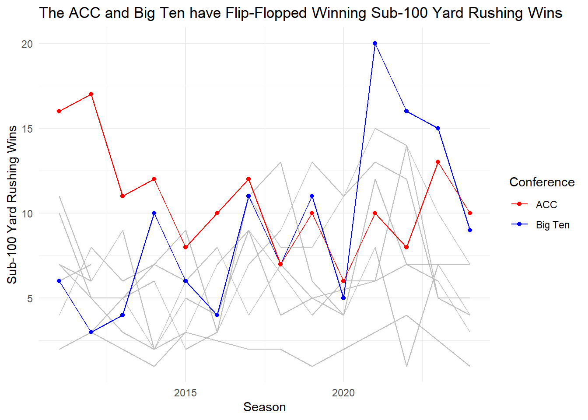

Jonathan Iacovacci, Working with Eli Cohen and Matthew Neus
Published
October 22, 2024
The philosophy that you need to run the ball to win is one that is hotly debated in Sports Circles. But teams in the Big Ten and ACC conference have gotten away with winning games despite not rushing for 100 Yards. The difference between the two is that they’ve flipflopped positions in the past two years.
Code
library(tidyverse)
── Attaching core tidyverse packages ──────────────────────── tidyverse 2.0.0 ──
✔ dplyr 1.1.4 ✔ readr 2.1.5
✔ forcats 1.0.0 ✔ stringr 1.5.1
✔ ggplot2 3.5.1 ✔ tibble 3.2.1
✔ lubridate 1.9.3 ✔ tidyr 1.3.1
✔ purrr 1.0.2
── Conflicts ────────────────────────────────────────── tidyverse_conflicts() ──
✖ dplyr::filter() masks stats::filter()
✖ dplyr::lag() masks stats::lag()
ℹ Use the conflicted package (<http://conflicted.r-lib.org/>) to force all conflicts to become errors
`summarise()` has grouped output by 'Season'. You can override using the
`.groups` argument.
Code
BigTen <- data |>filter(Conference =="Big Ten Conference")SEC <- data |>filter(Conference =="Southeastern Conference")CUSA <- data |>filter(Conference =="Conference USA")Big12 <- data |>filter(Conference =="Big 12 Conference")Ind <- data |>filter(Conference =="Independent")MAC <- data |>filter(Conference =="Mid-American Conference")PAC12 <- data |>filter(Conference =="Pac-12 Conference", Conference =="Pacific-12 Conference")BigEast <- data |>filter(Conference =="Big East Conference")SunBelt <- data |>filter(Conference =="Sun Belt Conference")MWC <- data |>filter(Conference =="Mountain West Conference")WAC <- data |>filter(Conference =="Western Athletic Conference")ACC <- data |>filter(Conference =="Atlantic Coast Conference")ggplot(data) +geom_line(data = SEC, aes(x = Season, y = Wins), color ="gray") +geom_line(data = CUSA, aes(x = Season, y = Wins), color ="gray") +geom_line(data = Big12, aes(x = Season, y = Wins), color ="gray") +geom_line(data = Ind, aes(x = Season, y = Wins), color ="gray") +geom_line(data = MAC, aes(x = Season, y = Wins), color ="gray") +geom_line(data = PAC12, aes(x = Season, y = Wins), color ="gray") +geom_line(data = BigEast, aes(x = Season, y = Wins), color ="gray") +geom_line(data = SunBelt, aes(x = Season, y = Wins), color ="gray") +geom_line(data = MWC, aes(x = Season, y = Wins), color ="gray") +geom_line(data = WAC, aes(x = Season, y = Wins), color ="gray") +geom_point(data = BigTen, aes(x = Season, y = Wins, color ="Big Ten")) +geom_line(data = BigTen, aes(x = Season, y = Wins, color ="Big Ten")) +geom_point(data = ACC, aes(x = Season, y = Wins, color ="ACC")) +geom_line(data = ACC, aes(x = Season, y = Wins, color ="ACC")) +labs(title ="The ACC and Big Ten have Flip-Flopped Winning Sub-100 Yard Rushing Wins", x ="Season", y ="Sub-100 Yard Rushing Wins",color ="Conference") +# Label for the legendscale_color_manual(values =c("Big Ten"="blue", "ACC"="red")) +# Custom colors for Big Ten and ACCtheme_minimal()

Winning when rushing for less than 100 yards isn’t common. When we load in the data of Sub 100 Yard Rushing games, it’s not pretty, as expected, there were 5122 Sub-100 Yard rushing games since 2011. Only 1096 of them were wins. This comes out to a 21% win percentage, which is not very good.
In the Big Ten, this is no exception, with a slightly better win percentage than the national average, the Big Ten had a little more than a half of a percentage point better when it came to Sub-100 Yard rushing wins.
Well what teams get away with these performances? Surprisingly, the conference that has had the most amount of games with Sub-100 Yard Rushing is the Big Ten, the rough and tough conference that loves to run the ball according to fans. But when you look at wins after these performances, the ACC reigns supreme.
# A tibble: 14 × 2
Conference Wins
<chr> <int>
1 Atlantic Coast Conference 150
2 Big Ten Conference 127
3 Pac-12 Conference 127
4 Southeastern Conference 121
5 Conference USA 99
6 Mountain West Conference 96
7 American Athletic Conference 78
8 Big 12 Conference 78
9 Sun Belt Conference 75
10 Mid-American Conference 73
11 Independent 26
12 Big East Conference 17
13 Pacific-12 Conference 16
14 Western Athletic Conference 13
But when you look season by season, you can see a trend between the Big Ten and ACC Conference moving in different directions. The Big Ten was one of the worst teams in the country in getting wins from Sub-100 Rushing Yard games, with more games in 2011 than the ACC, yet only six wins. In that same year, the ACC had 16 wins, more than double that of the Big Ten. But over time, these conferences almost swapped places, with 2021 the most glaring change, as the Big Ten had 20 wins compared to the ACC’s 10.
`summarise()` has grouped output by 'Season'. You can override using the
`.groups` argument.
Code
data <- sub100W |>group_by(Season,Conference) |>summarize(Wins =n()) |>arrange(Season)
`summarise()` has grouped output by 'Season'. You can override using the
`.groups` argument.
Code
# Correct filtering for multiple conferencestotaldata |>filter(Conference =="Big Ten Conference"| Conference =="Atlantic Coast Conference")
# A tibble: 28 × 3
# Groups: Season [14]
Season Conference Games
<int> <chr> <int>
1 2011 Atlantic Coast Conference 45
2 2011 Big Ten Conference 26
3 2012 Atlantic Coast Conference 50
4 2012 Big Ten Conference 27
5 2013 Atlantic Coast Conference 41
6 2013 Big Ten Conference 31
7 2014 Atlantic Coast Conference 43
8 2014 Big Ten Conference 38
9 2015 Atlantic Coast Conference 34
10 2015 Big Ten Conference 42
# ℹ 18 more rows
Code
Winsdata <- data |>filter(Conference =="Big Ten Conference"| Conference =="Atlantic Coast Conference")Winsdata
# A tibble: 28 × 3
# Groups: Season [14]
Season Conference Wins
<int> <chr> <int>
1 2011 Atlantic Coast Conference 16
2 2011 Big Ten Conference 6
3 2012 Atlantic Coast Conference 17
4 2012 Big Ten Conference 3
5 2013 Atlantic Coast Conference 11
6 2013 Big Ten Conference 4
7 2014 Atlantic Coast Conference 12
8 2014 Big Ten Conference 10
9 2015 Atlantic Coast Conference 8
10 2015 Big Ten Conference 6
# ℹ 18 more rows
Why was this the case? There are a couple of reasons, but the biggest one is that the Big Ten didn’t see many teams score wins from Sub-100 rushing yard performances in 2011, with only 5 in 2011. In the same year, the ACC saw five teams win twice after rushing under 100 yards, and nine total teams scoring at least one win. This happens in reverse in 2021, with eight teams in the Big Ten getting at least one win from Sub-100 yard rushing performances, with Purdue and Penn State combining for 10 Wins by themselves. The ACC only had five teams that were able to get one Sub-100 Yard rushing win.
# A tibble: 13 × 4
# Groups: Season, TeamFull [13]
Season TeamFull Conference Wins
<int> <chr> <chr> <int>
1 2021 Iowa Hawkeyes Big Ten Conference 3
2 2021 Maryland Terrapins Big Ten Conference 1
3 2021 Michigan State Spartans Big Ten Conference 3
4 2021 Minnesota Golden Gophers Big Ten Conference 1
5 2021 Ohio State Buckeyes Big Ten Conference 1
6 2021 Penn State Nittany Lions Big Ten Conference 4
7 2021 Purdue Boilermakers Big Ten Conference 6
8 2021 Rutgers Scarlet Knights Big Ten Conference 1
9 2021 Miami (FL) Hurricanes Atlantic Coast Conference 3
10 2021 North Carolina State Wolfpack Atlantic Coast Conference 3
11 2021 Pitt Panthers Atlantic Coast Conference 2
12 2021 Virginia Cavaliers Atlantic Coast Conference 1
13 2021 Wake Forest Demon Deacons Atlantic Coast Conference 1
Code
BigTen
# A tibble: 14 × 3
# Groups: Season [14]
Season Conference Wins
<int> <chr> <int>
1 2011 Big Ten Conference 6
2 2012 Big Ten Conference 3
3 2013 Big Ten Conference 4
4 2014 Big Ten Conference 10
5 2015 Big Ten Conference 6
6 2016 Big Ten Conference 4
7 2017 Big Ten Conference 11
8 2018 Big Ten Conference 7
9 2019 Big Ten Conference 11
10 2020 Big Ten Conference 5
11 2021 Big Ten Conference 20
12 2022 Big Ten Conference 16
13 2023 Big Ten Conference 15
14 2024 Big Ten Conference 9
The real why in this case is the drastic change in offenses in the Big Ten towards more passing in the Late 2010s. In 2011, the Big Ten had close to 15 more attempts of rushes than passes. In 2024, this difference dropped to less than four. The ACC has always valued the pass, and even has been close to even in 2024, but production from passers hasn’t been as kind to get wins from lack of rushing.